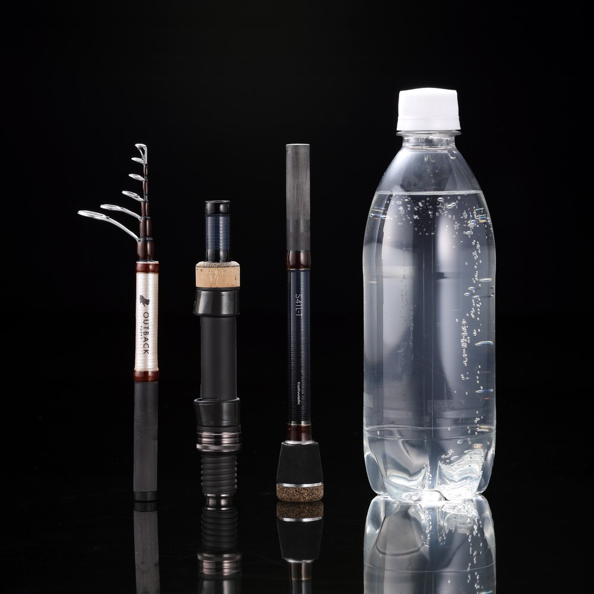
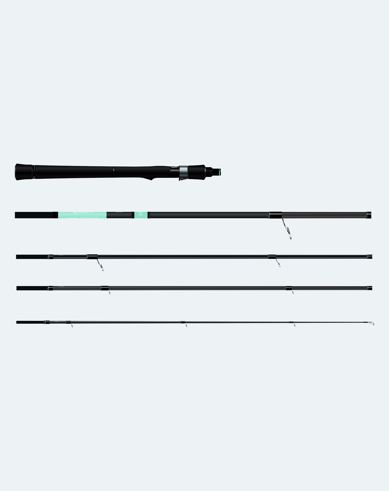
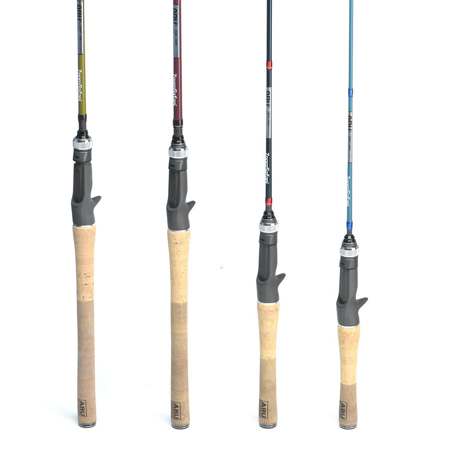

アウトバック パピー
（OUTBACK PUPPY）
アウトバック パピーは、テイルウォークのパックロッド「アウトバック」シリーズの、超々コンパクトな振出（テレスコピック）ロッドです。
キャッチコピーは「いつでも、どこでも、ついてくる君だけの小さな相棒（パピー）」。ロッド・リールシート・グリップを三分割した設計で、仕舞寸法18cm〜と500mlペットボトルより小さくたためるのが最大の特徴です。旅の途中で見つけた水辺で、「ここで釣りをしてみよう」と思った瞬間に応えてくれる1本です。

画像出典:テイルウォーク公式HP
スペック
- メーカー
- テイルウォーク（tailwalk）
- タイプ
- 振出（テレスコピック）スピニングロッド
- ラインナップ
- 全6機種（S48UL-T・S50UL-T・S58UL-T・S41L-T・S50L-T・S62ML-T）
- 長さ
- 4ft1in〜6ft2in
- 継数
- 12〜14本
- 仕舞寸法
- 18〜22.5cm
- 自重
- 59〜88g
- ルアー重量
- 1〜10g
- ライン
- max 6〜12lb
- アクション
- レギュラー
- ティップ
- カーボンソリッド
- ガイド
- Fuji アルコナイトリングガイド
- 付属
- Fuji トップカバー「PTC」
- 価格
- 16,500〜18,500円（メーカー希望小売価格）
- 発売
- 2026年3月
▼今すぐチェック


アウトバック パピーの特徴
いつでも、どこでも、ついてくる小さな相棒
-
三分割で仕舞寸法18cm〜
ロッド・リールシート・グリップを三分割する「TRI-PIECE DESIGN」で、仕舞寸法18cm〜を実現。500mlペットボトルよりも小さく、普段使いのバッグにもすんなり収まる。
-
滑らかに曲がる超々小継の振出
ブランクスは、スムーズな曲がりと持ち運びやすさを両立した超々小継のテレスコピック（振出）タイプ。継数は12〜14本で、伸ばすだけですぐに釣りを始められる。
-
折れにくいカーボンソリッドティップ
振出ロッドの弱点である穂先の破損のリスクを抑えるため、ティップにはカーボンソリッドを採用。ガイドは強度が高く摩擦の少ないFujiのアルコナイトリング、細い竿も固定できるFujiのトップカバー「PTC」も付いている。
全6機種のスペックと選び方
| モデル | 長さ・継数 | 仕舞寸法・自重 | ルアー・ライン |
|---|---|---|---|
| S41L-T | 4ft1in・12本 | 18cm・59g | 2〜7g・max 8lb |
| S48UL-T | 4ft8in・12本 | 20.5cm・64g | 1〜5g・max 6lb |
| S50UL-T | 5ft0in・13本 | 20.5cm・65g | 1〜5g・max 6lb |
| S50L-T | 5ft0in・13本 | 20.5cm・66g | 2〜7g・max 8lb |
| S58UL-T | 5ft8in・13本 | 22.5cm・72g | 1〜5g・max 6lb |
| S62ML-T | 6ft2in・14本 | 22.5cm・88g | 3〜10g・max 12lb |
※テイルウォーク公式HPの記載より。価格はS41L-Tの16,500円からS62ML-Tの18,500円まで。どの機種もアクションはレギュラーで、プラグ・ワーム・マイクロジグのほか、エサ釣りの仕掛けにも使えます。
いちばん小さくたためるのはS41L-T（仕舞18cm）。1〜5gの軽いルアーならUL、2〜7gならL、3〜10gの少し重いルアーや足場の高い場所ならMLのS62ML-Tと、使うルアーの重さで選ぶのがおすすめです。ブランクにはモデルごとに、UL＝トイプードル、L＝フレンチブルドッグ、ML＝柴犬の子犬のシルエットがプリントされています。
番手ごとの向いている釣り
| 番手 | 長さ・ルアー | 向いている釣り（目安） |
|---|---|---|
| S41L-T | 4ft1in・2〜7g | シリーズでいちばん小さい仕舞18cm。旅行や散歩の鞄に入れておき、足場の低い小河川や港の足元で小魚・ハゼ・カサゴを |
| S48UL-T | 4ft8in・1〜5g | 木の枝が張り出す渓流や小河川で、小さなスプーンやミノーを使ったトラウトに |
| S50UL-T | 5ft0in・1〜5g | 小河川から港まで。1〜3gのジグヘッドでアジ・メバル、小さなプラグで小魚を |
| S50L-T | 5ft0in・2〜7g | 港の際や岩まわりで、少し重めのジグヘッドやマイクロジグを使ってメバル・カサゴなどの根魚を |
| S58UL-T | 5ft8in・1〜5g | 少し足場の高い堤防で、軽いジグヘッドを使ったアジング・メバリングに。長さがあるので取り込みもしやすい |
| S62ML-T | 6ft2in・3〜10g | シリーズでいちばん長くて強いモデル。堤防からのマイクロジグでカマス・セイゴ・小型の青物を。サビキなどのエサ釣りにも |
※テイルウォーク公式HPには狙う魚の記載がないため、長さとルアー重量から選んだ目安です。
アウトバック パピーの使い方
振出ロッドなので、穂先側から順番に1本ずつ伸ばし、継ぎ目をしっかり止めてからリールシートとグリップを組みます。伸ばしきらない継ぎ目があると、そこに負担がかかって折れる原因になります。
使うルアーは、1〜10gの小型のプラグ・ワーム・マイクロジグが中心です。エサ釣りの仕掛けにも使えるので、旅先の堤防でサビキやちょい投げを楽しむこともできます。
アウトバック パピーがおすすめの人
旅行や出張、散歩の途中など、釣りが目的ではない外出のついでに、見つけた水辺ですぐに竿を出したい人におすすめです。
普段使いのバッグに入れておけるので、ふと通りかかった川や港で、小魚やメバル・アジなどの小物が釣れるチャンスを逃しません。釣りを始めたばかりの子どもや家族と、気軽に水辺で遊ぶ1本にも向いています。
ワンポイント
振出ロッドは、たたむときに砂や塩が継ぎ目に入ると、次に伸ばすときに固着や傷の原因になります。釣りのあとは真水を含ませた布で継ぎ目を拭いてからたたむと、伸び縮みがスムーズなまま長く使えます。
アウトバック パピーに合わせたいリール
ライン max 6〜12lb・ルアー1〜10gの軽いロッドなので、1000〜2000番クラスの小型スピニングリールが合います。コンパクトさを生かすなら、リールも小さく軽いものを選ぶのがおすすめです。
| リール | 合わせたい理由 |
|---|---|
| シマノ サハラ 1000〜C2000番クラス |
手ごろな価格の小型スピニング。気軽に持ち歩くパピーと組み合わせやすい。 |
| ダイワ レブロス LT1000〜2000番クラス |
軽くて扱いやすい入門向けのスピニング。旅先用のサブタックルにも。 |
※最新のラインナップや番手は各メーカーの公式サイトで確認してください。
▼今すぐチェック
アウトバック パピーとあわせてチェックしたいアイテム
-
 バトゥータ80S+
TRANSCENDENCE
詳細はこちら＞
バトゥータ80S+
TRANSCENDENCE
詳細はこちら＞
仕舞寸法460mmのエギング・ライトゲーム用パックロッド。本格的な釣りもしたいなら。
-

ディアナクト 78L5 GOTO9 詳細はこちら＞5ピースのライトゲームパックロッド。シーバスやメバルを本気で狙うなら。
-

ズームサファリ アブガルシア 詳細はこちら＞振出から並継まで選べるパックロッドのシリーズ。